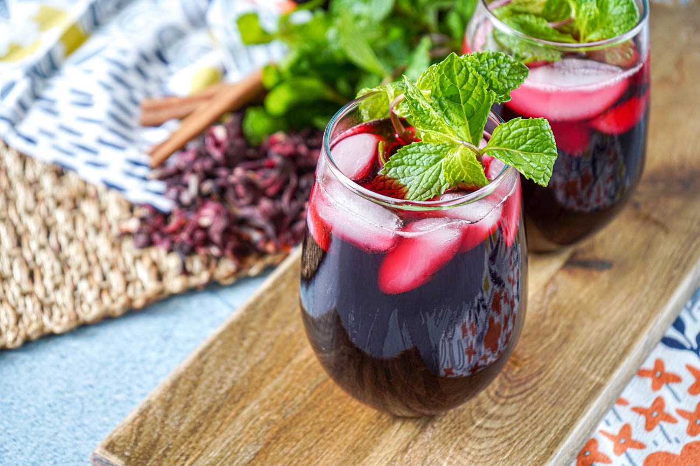

NB:Prima di iniziare, clicca sull' AUDIO per ascoltare un piacevole SOTTOFONDO MUSICALE
Il Senegal, ha la caratteristica principale di essere tradizionalmente molto ospitale, per la stessa impostazione culturale dei suoi abitanti. Questa caratteristica, unita alle meraviglie paesaggistiche, alle moltissime spiagge ricche di fascino tra cui scegliere, alle vitali città e alla buona offerta turistica sviluppata nell'ultimo ventennio, fanno di questo stato uno tra i preferiti dai viaggiatori che decidono di intraprendere una vacanza in Africa.La cucina rappresenta un elemento essenziale per immergersi nella cultura del popolo senegalese. Si gustano principalmente piatti unici molto ricchi, che hanno come base il riso, il miglio, il pesce, la carne o il pollo e le verdure. Oggi tratteremo:
Vermicelles au poulet
Bissap
IL PIATTO: VERMICELLES AU POULET
La preparazione del piatto richiede un po' di tempo ma ne vale la pena dopo la degustazione. È una delle mie ricette preferite. In Senegal siamo abituati a cucinare spesso il riso a pranzo. Il riso è diventato una parte abituale della nostra dieta. Ma perché mangiare il riso tradizionale quando puoi goderti i vermicelli facili da digerire.
Puoi accompagnare i tuoi vermicelli con manzo o agnello, ma questa volta ho scelto di accompagnarli con il pollo.
Ricetta:
N° persone
Tempo di preparazione e cottura
Difficoltà
Per 5-6 persone
1h30 min
facile da realizzare
Ingredienti:
Per la salsa di pollo:
12 cl di olio
1 pollo intero
1 limone
6 spicchi d'aglio
1 cucchiaino di pepe macinato
1 pizzico di erbe provinciali
2 peperoncini verdi
Sale
3 rametti di cipolla verde
2 rametti di prezzemolo cinese
1 kg di cipolle
1 cucchiaino di senape
1 cucchiaio di aceto
20 g di burro per grigliare il pollo (facoltativo)
Per preparare i vermicelli:
1 kg di vermicelli
2 cucchiai di olio
1 carota
sale
2 pezzi di zucchero
30 g di uvetta
15 g di burro
Per il condimento:
2 uova
3 peperoni verdi, gialli e rossi
1 pomodoro fresco
1 rametto di coriandolo
1 vasetto di cipolla bianca
Istruzioni:
1) Preparare il pollo:
Iniziamo preparando il "noccas", si tratta di una miscela di condimenti e spezie che utilizziamo sotto forma di ripieno. Per fare questo, mescolare 4 spicchi d'aglio, 1 peperone verde, ½ cucchiaino di pepe macinato, cipolla verde tritata e un pizzico di sale.
Pulite accuratamente il pollo più volte in acqua salata. Puoi aggiungere aceto all'acqua salata per rimuovere tutta la sostanza appiccicosa dal pollo.
Poi fate dei buchi in vari punti e riempiteli con metà del ripieno.
Salare il pollo con ½ cucchiaino di sale. Distribuire l'altra metà del ripieno su tutta la superficie del pollo. Marinare bene il pollo, spremere sopra ½ limone.
2) Versare ½ bicchiere d'acqua. Lasciare cuocere per 5 minuti. Giratela con attenzione e lasciate cuocere l'altro lato. Togliere dal fuoco
3) Scaldare in una casseruola 12 cl di olio. Aggiungere il pollo con attenzione per non bruciarsi. Cuocere per 10 minuti a fuoco medio. Quando il pollo sarà colorito da un lato, giratelo e lasciate dorare l'altro lato. Quando il pollo avrà un bel colore dorato, toglierlo e metterlo da parte.
4) Grigliare il pollo (facoltativo):
spalmare il pollo con un po' di burro, quindi grigliarlo per qualche minuto sulla carbonella (per il gusto, per il buon odore).
5) Preparazione della salsa:
Tagliare a cubetti 1 kg di cipolle. Dopo aver tolto dall'olio il pollo già cotto, aggiungere le cipolle nella casseruola. Lasciare rosolare per 10 minuti e mescolare di tanto in tanto per evitare che la salsa si attacchi.
6) Procedi con la preparazione del noccas (impasto di condimenti): mescola 2 spicchi d'aglio, 1 peperone verde,
foglie di prezzemolo, il restante cipollotto tritato, un pizzico di erbe aromatiche, ½ cucchiaino di pepe… Aggiungi il composto alla salsa. Lasciare cuocere per altri 5 minuti. Aggiungi sale.
7) Aggiungere ½ bicchiere d'acqua. Aggiungi 1 cucchiaino di senape e un cucchiaio di aceto. Mescolare. Lasciare cuocere per qualche minuto a fuoco basso.
8) Quando l'olio salirà a galla la salsa sarà ben cotta. Assaggiare e aggiustare di condimento se necessario (sale, pepe e peperoncino).
Togliere dal fuoco. La salsa è pronta.
9) Preparazione e cottura dei vermicelli:
Far bollire 1,5 litri di acqua nella pentola della macchina per il cous cous.
10) 1a cottura dei vermicelli: mettere i vermicelli in un'insalatiera o in una zucca. Aggiungere 2 cucchiai di olio ai vermicelli. Mescolare bene utilizzando le mani. Aggiungere poi ½ bicchiere d'acqua. Mescolare con le mani, districandoli.
11) Aggiungere i vermicelli sopra il couscoussier. Mettete il coperchio e fate cuocere per 10 minuti.
12) 2° cottura dei vermicelli: Per la seconda cottura aggiungere in una ciotolina ½ bicchiere d'acqua. Sciogliere 2 zollette di zucchero e ½ cucchiaino di sale. Mescolare.
13) Cospargete poi i vermicelli con il liquido ottenuto.
14) Ritorna nella macchina per il cous cous e cuoci per altri 20 minuti. Nel frattempo lavate e sbucciate la carota. Tagliare la carota a cubetti. Cuocere contemporaneamente ai vermicelli.
15) Controllate se i vermicelli sono cotti (morbidi senza essere molli).
Se necessario ripetete l'operazione (rimettendo i vermicelli in una ciotola e irrorandoli con un po' d'acqua).
Aggiungere il burro e l'uvetta. Mescolare delicatamente e mettere da parte.
I vermicelli sono pronti. 16) Preparazione delle verdure crude:
Lavare e tagliare a fettine il pomodoro fresco e i peperoni. Prenotare.
Cuocere a vapore 2 uova. Tagliare a rondelle.
17) Formazione:
Utilizzare un piatto grande. Aggiungere i vermicelli. Aggiungi il pollo al centro. Aggiungere la salsa. Aggiungere le verdure (peperone verde, peperone giallo, peperoncino, pomodoro fresco). Aggiungere le uova tagliate a fettine. Aggiungere le cipolle bianche. Infine lavate e tritate le foglie di coriandolo. Cospargere il coriandolo sopra.
Buonissimo!
Spero di cuore che questa ricetta vi sia piaciuta!
Cultura e tradizione!
Per gli abitanti del Senegal i pasti rappresentano momenti importanti di condivisione, solidarietà e incontro, tant'è che è abitudine mangiare tutti insieme, seduti su un tappeto intorno allo stesso vassoio, che contiene porzioni per sei fino a dieci persone, a volte anche di più.
Di solito non vengono usate le posate, ma si mangia con la mano destra, raccogliendo con le dita un po' di riso, appallottolandolo fino a formare delle specie di polpette e portandolo alla bocca. Tuttavia, quando ci sono ospiti europei viene solitamente offerto loro un cucchiaio. Il pesce, la carne e le verdure vengono spezzettati dalla padrona di casa.
L'ospitalità, l'accoglienza e la disponibilità del popolo senegalese nei confronti degli ospiti e degli stranieri, virtù tipiche conosciute come "teranga", fanno sì che agli ospiti vengano cucinati piatti con gli ingredienti più pregiati e che vengano loro riservate le parti migliori. Il pranzo è accompagnato dal bissap, un infuso di carcadè servito freddo; a fine pasto, dopo la frutta viene servito il tè berbero(athaya).
LA BEVANDA: BISSAP
Bissap, così viene chiamata in Senegal questa bevanda rinfrescante a base di fiori essicati di Ibisco. L’equivalente del più noto karkadè . Molto amata in tutta l’Africa occidentale, dove viene spesso arricchita con succhi di frutta all’ananas, al mango, alla papaya e altre specialità tropicali.
Ingredienti:
2 litro di acqua
400 gr di fiori di ibisco
un mazzetto di menta dolce fresca
essenza di vaniglia (facoltativo)
1 cucchiaio di acqua di fiori d'arancio
250 gr di zucchero
frutta a piacere

Preparazione:
Per prima cosa, sciacquate i fiori essiccati, quindi mettete a bollire l’acqua in una pentola, una volta raggiunto il bollore spegnete e versateci dentro i fiori e le foglie di menta fresca.
In altre ricette i fiori di ibisco vengono versati in pentola non appena l’acqua bolle, lasciando acceso il fuoco per 10-15 minuti. Io preferisce spegnerlo prima di versarli per evitare che la bevanda risulti troppo aspra, dopodiché lascia in infusione per 15-20 minuti finché l’acqua non risulta di un bel rosso scuro.
A questo punto dovete filtrare l’acqua con un colino eliminando i fiori e le foglie, quindi lasciarla raffreddare o metterla nel frigo. Aggiungete lo zucchero e un cucchiao di acqua di fiori di arancio. Al momento del servizio, integrate con frutta a piacere.
Consigli furbi: -Vi consiglio di utilizzare la fragola o l'ananas. La fragola se amate le bevande dolci, l'ananas se volete dargli un pizzico di asprezza.
-Il succo di ananas conferisce alla bevanda quel tocco in più. Volendo potete sostituirlo con pezzi di ananas fresco, versandoli direttamente nella bevanda.
CURIOSITA'!
Il bissap è una bevanda praticamente sconosciuta nelle nostre parti, ma molto apprezzata e frequentemente preparata in Africa. In particolare è una bevanda tradizionale del Senegal. Si ottiene con i fiori di ibisco essicati, che nella lingua nativa sono noti proprio come "bissap". Altrove quetsa bevanda è notacome "karkade ". E' una bevanda rinfrescante, adatta ai climi caldi e da gustare sopratutto in estate(ovviamente è sempre buona). Si presenta con un bel colore rosso scuro, spezzato dal verde della menta e dagli altri colori della frutta che si può aggiungere. Per quanto riguarda lo zucchero, vi consiglio di usare quello bianco, piuttosto che il bruno di canna. Quest'ultimo infatti, apporta un sapore caramellato che stona rispetto ai sapori floreali e leggeri degli altri ingredienti.
Il bissap è noto per essere ricco di antiossidanti, vitamina C e altri nutrienti benefici per la salute. E' anche utilizzato in cucina per preparare sciroppo, gelatine e salse per accompagnare vari piatti.
SPERIAMO CHE QUESTO VIAGGIO CULINARIO DI SAPORI UNICI E PARTICOLARI IN SENEGAL VI SIA PIACIUTO! Ci vediamo al prossimo world wide foods...